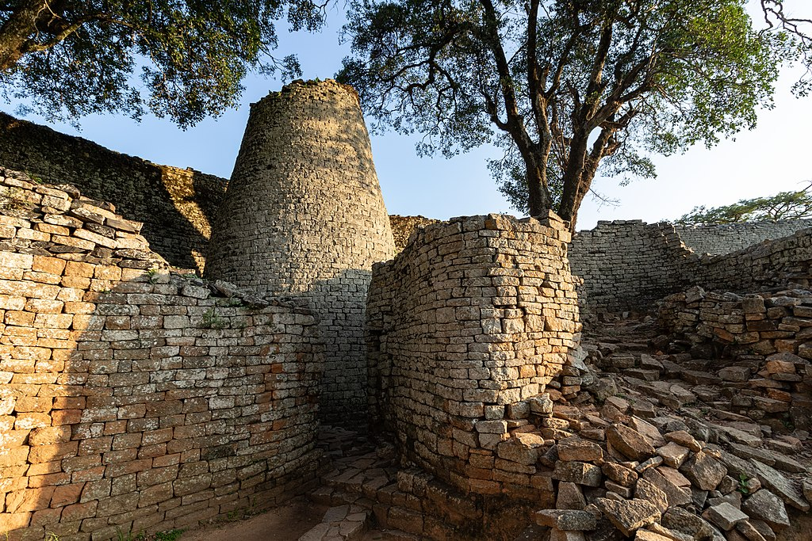

Collen Mloyi | WDD 130
My name is Collen Mloyi. I am from Bulawayo in Zimbabwe. I enjoy watching soccer and coding during my spare
time. Check my facebbo profile on https://www.facebook.com/Coomp230
Bulawayo, Zimbabwe

Great Zimbabwe is a medieval city in the south-eastern hills of the modern country of Zimbabwe,
near Lake Mutirikwe and the town of Masvingo. It is thought to have been the capital of a kingdom during the Late Iron Age.
Construction on the city began in the 11th century and continued until it was abandoned in the 15th century.
The edifices were erected by ancestors of the Shona people, currently located in Zimbabwe and nearby countries.
The stone city spans an area of 7.22 square kilometres (2.79 sq mi) and could have housed up to 18,000 people at its peak, giving it a population density of approximately 2,500
inhabitants per square kilometre (6,500/sq mi). It is recognised as a World Heritage Site by UNESCO.